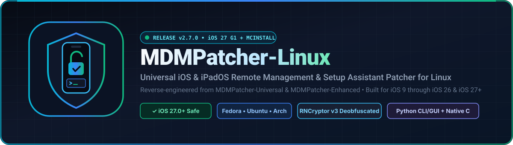
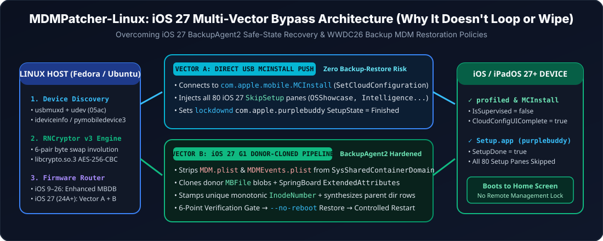

The complete Linux port and reverse-engineered upgrade of MDMPatcher-Universal and MDMPatcher-Enhanced—engineered for Fedora Linux, Ubuntu/Debian, and Arch Linux with native multi-vector support for iOS 9 through iOS 26 & iOS 27+.
How MDMPatcher-Linux Reliably Works on iOS 27 (Without Factory-Reset Loops)
In iOS 27 (builds 24A+), Apple hardened BackupAgent2 against legacy partial/sparse restores
and updated backupd (WWDC26 Device Management) to ignore stale MDM profiles from synthetic partial backups.
MDMPatcher-Linux solves this with a Dual-Vector iOS 27 Engine:

⚡ Vector A: Direct USB MCInstall Push
Connects over USB Lockdown directly to com.apple.mobile.MCInstall (MobileConfigService)
and pushes SetCloudConfiguration with all 80 iOS 27 SkipSetup panes
(including OSShowcase, SafetyAndHandling, AgeBasedSafetySettings,
Intelligence, and CameraButton) plus persistent lockdownd
com.apple.purplebuddy completion flags—with zero partial-restore wipe risk.
🛡️ Vector B: iOS 27 G1 Donor-Cloned Pipeline
Strips active MDM.plist and MDMEvents.plist from
SysSharedContainerDomain-systemgroup.com.apple.configurationprofiles, clones real donor
MBFile blobs with SpringBoard ExtendedAttributes, synthesizes parent directory rows,
and stamps strictly unique monotonic InodeNumber values so iOS 27's BackupAgent2
inode-deduplication pass accepts every injected file.
🔒 6-Point Pre-Restore Verification Gate
Before any restore packet is sent over USB, MDMPatcher-Linux validates SQLite integrity, atomic
Manifest.plist / Status.plist state, SHA-1 Digest equality,
non-zero payload sizes, parent directory chains, and inode uniqueness—then restores with
--no-reboot and a 60s SSL handshake watchdog.
Step-by-Step Installation (Fedora, Ubuntu/Debian, Arch, openSUSE)
Select your Linux distribution below, or run the unified ./scripts/install.sh installer which
automatically configures packages, usbmuxd, and Apple USB udev rules.
Fedora Linux 39 / 40 / 41 / 42 / 43+ Installation
Works out-of-the-box on Fedora Workstation, Fedora KDE Plasma, Nobara, Ultramarine, RHEL/Alma/Rocky, and Fedora Silverblue/Kinoite:
# 1. Clone the repository
git clone https://github.com/supermario3D1/mdmpatcher-linux.git
cd mdmpatcher-linux
# 2. Option A: One-command automated Fedora setup (installs dnf packages, udev rules, usbmuxd & C binary)
./scripts/install.sh --venv
# 2. Option B: Manual Fedora dnf installation
sudo dnf install -y usbmuxd libimobiledevice libimobiledevice-utils libplist \
openssl openssl-libs python3 python3-pip python3-tkinter \
gcc make pkgconf-pkg-config libimobiledevice-devel libimobiledevice-glue-devel \
libplist-devel openssl-devel libzip-devel readline-devel
# Install Apple USB udev rules & start usbmuxd on Fedora
sudo cp scripts/39-usbmuxd-mdmpatcher.rules /etc/udev/rules.d/
sudo udevadm control --reload-rules && sudo udevadm trigger
sudo systemctl start usbmuxd.service
# Optional: Install pymobiledevice3 for iOS 27 Direct MCInstall support
python3 -m venv .venv && source .venv/bin/activate
pip install -e ".[usb]"Ubuntu / Debian / Linux Mint / Pop!_OS / Kali Installation
git clone https://github.com/supermario3D1/mdmpatcher-linux.git
cd mdmpatcher-linux
# Automated setup:
./scripts/install.sh --venv
# Or manual apt installation:
sudo apt update
sudo apt install -y usbmuxd libimobiledevice6 libimobiledevice-utils ideviceinstaller \
libplist-utils openssl python3 python3-pip python3-venv python3-tk \
build-essential pkg-config libimobiledevice-dev libplist-dev libssl-dev libzip-dev libreadline-devArch Linux / Manjaro / EndeavourOS / CachyOS Installation
git clone https://github.com/supermario3D1/mdmpatcher-linux.git
cd mdmpatcher-linux
# Automated setup:
./scripts/install.sh --venv
# Or manual pacman installation:
sudo pacman -Sy --needed usbmuxd libimobiledevice libplist openssl libzip readline python python-pip tk base-devel pkgconfopenSUSE Tumbleweed / Leap Installation
git clone https://github.com/supermario3D1/mdmpatcher-linux.git
cd mdmpatcher-linux
./scripts/install.sh --venviOS & iPadOS Compatibility Matrix (iOS 9 – iOS 27+)
| iOS / iPadOS Version | Build Range | Recommended Mode | Primary Mechanism | Status |
|---|---|---|---|---|
| iOS 27.0+ | 24A335+ |
ios27 (auto-detected) |
Vector A (MCInstall 80-pane SetCloudConfiguration + lockdownd) + Vector B (G1 Donor-Cloned Manifest.db) |
Supported |
| iOS 26.0 – 26.7 | 23A+ – 23G+ |
enhanced / ios27 |
SysSharedContainerDomain + ManagedPreferencesDomain + MCInstall |
Supported |
| iOS 17.0 – 18.6 | 21A+ – 22G+ |
enhanced |
SysSharedContainerDomain + ManagedPreferencesDomain + Partial Setup Bypass |
Supported |
| iOS 15.0 – 16.7.x | 19A+ – 20H+ |
enhanced / modern |
CloudConfigurationDetails.plist + MCMeta.plist Build Sync |
Supported |
| iOS 9.0 – 14.8.1 | 13A+ – 18H+ |
enhanced / legacy |
HomeDomain/Library/ConfigurationProfiles/* + Manifest.mbdb |
Supported |
When the device reboots after patching, if iOS displays the "iPhone Partially Set Up" screen, tap "Continue with Partial Setup" (small button at the bottom) — do not tap the blue "Finish Setting Up" button. The device will immediately enter the Home Screen with Remote Management bypassed.
Quick Start & Command Reference
# 1. Verify USB connection and check iOS version / Find My status
./mdmpatcher.py info
# 2. One-command auto-detect & patch (auto-selects 'ios27' engine on iOS 27+ or 'enhanced' on iOS 9-26)
./mdmpatcher.py patch
# 3. iOS 27 Vector A Only: Direct USB MCInstall CloudConfiguration & Setup Assistant Skip (No Restore)
./mdmpatcher.py skip-setup
# 4. iOS 27 Vector B Full Protective Pipeline (Full Device Backup -> MDM Purge & Donor Injection -> Verified Restore)
./mdmpatcher.py patch --full-backup-g1
# 5. Patch an existing Backup v3.3+ (Manifest.db) directory offline
./mdmpatcher.py patch-backup ./my_device_backup --block-ota
# 6. Launch the Linux Desktop GUI (Tkinter) or Interactive Terminal UI
./mdmpatcher.py gui